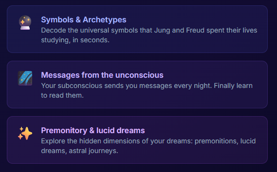

Now AI wants to read your dreams.

Maybe you haven’t been using large language models enough lately. Maybe the real problem is that AI still can’t see inside your dreams. Somniai is here to fix that. In the spirit of leaving no mental moment un-analyzed, this platform invites you to type out whatever strange, uncomfortable, deeply personal dream you had last night and let an AI explain what your subconscious is “really” trying to say. Finally, a place to share thoughts you would never tell your friends, your partner, or your therapist — but feel oddly comfortable handing to a server.
According to Somniai, your dreams are packed with ancient symbols, archetypes studied by Jung and Freud, cosmic influences, and hidden messages just waiting to be decoded — preferably instantly. Water means emotion. Fire means transformation. Shadows mean you haven’t explored yourself enough. You can also opt into premonitions, lucid dreaming guidance, astral journeys, and a symbol dictionary with over 5,000 entries, because nothing says “restful sleep” like waking up to a 12-paragraph explanation of why there was a hallway in your dream.
Of course, this quickly becomes a subscription journey. You start with three free analyses, just to get a taste. Then you’re offered “Transformation” for €9.90 a month, and finally “Awakening” for €19.90, which promises total mastery of your dream life, unlimited AI memory, sound therapies, and monthly reports about your unconscious. Somewhere between “I dreamed about being late to work” and “AI coach available 24/7,” you realize what’s really happening: we’ve officially begun outsourcing meaning itself. If you’re curious what an algorithm thinks your flying-teeth dream says about you, the oracle is ready: somniai.com